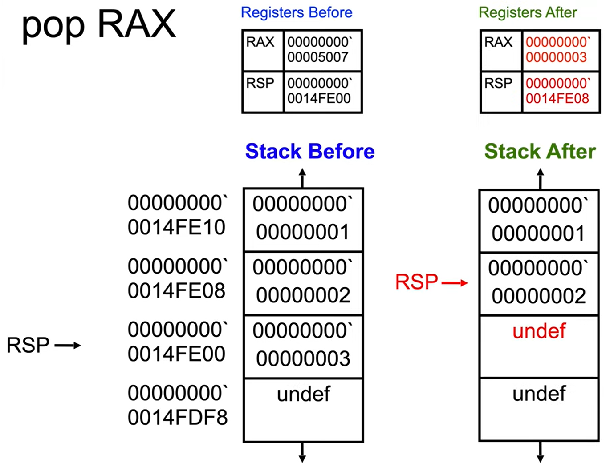

pop a value from the stack into the specified register
pop rax - pop from stack to rax
pop rbp - pop from stack to rbp
increases the value of the stack pointer (RSP) by 8
(increment by 4 in 32bit and by 2 in 16bit)
in 64-bit execution, the operand can- pop into 64-bit register
- pop into a memoryaddress as given in r/mX form
